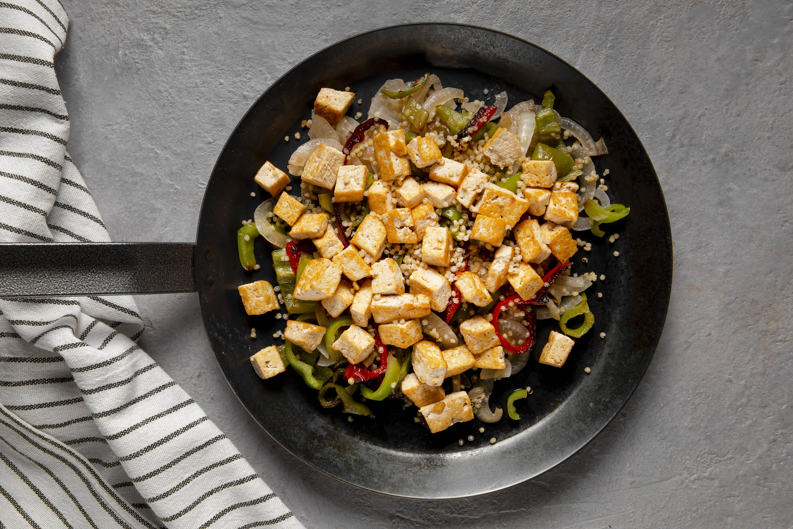

Tofu Stir-Fry Recipe
Home

Ingredients:
- 1 block of firm tofu, pressed and cubed
- 1 tablespoon soy sauce
- 1 tablespoon sesame oil (or vegetable oil)
- 1 tablespoon cornstarch (for crispy tofu)
- 1 bell pepper, sliced
- 1 zucchini, sliced
- 1 cup snap peas
- 1/2 onion, sliced
- 2 tablespoons soy sauce (for sauce)
- 1 tablespoon hoisin sauce
- 1 tablespoon rice vinegar
- 1 teaspoon sriracha (optional)
- Cooked rice for serving
Steps:
- Press the tofu to remove excess water, then cut it into cubes. Toss the cubes in cornstarch for a crispy texture.
- Heat sesame oil in a pan over medium-high heat and cook tofu until golden and crispy on all sides (about 6-8 minutes). Remove from the pan and set aside.
- In the same pan, add the bell pepper, zucchini, snap peas, and onion. Stir-fry for 5-7 minutes until tender-crisp.
- Mix soy sauce, hoisin sauce, rice vinegar, and sriracha to create the stir-fry sauce.
- Add the crispy tofu back into the pan and pour the sauce over the mixture. Stir to combine and coat everything in the sauce.
- Serve over cooked rice for a satisfying meal.